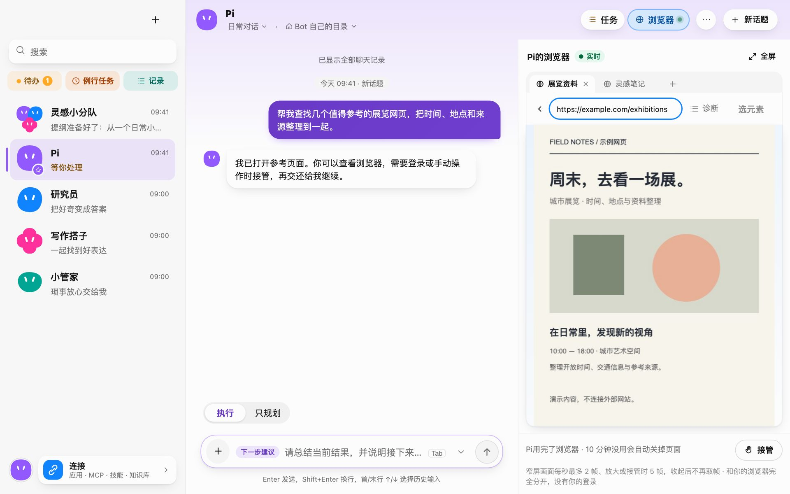
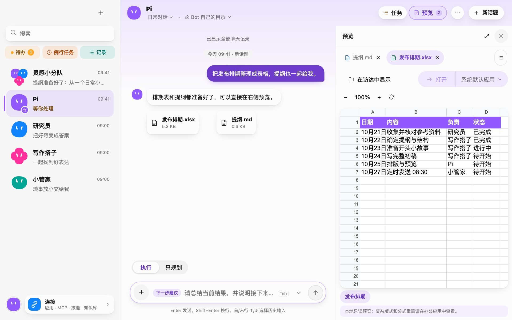
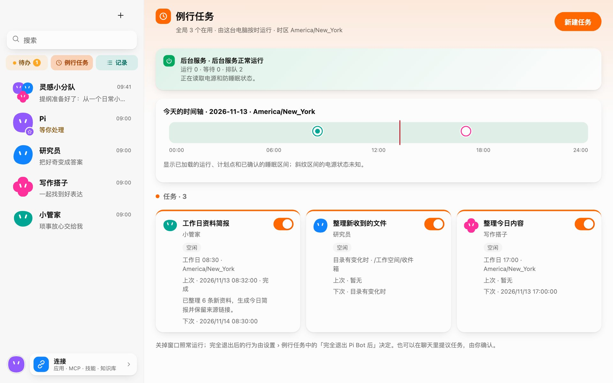
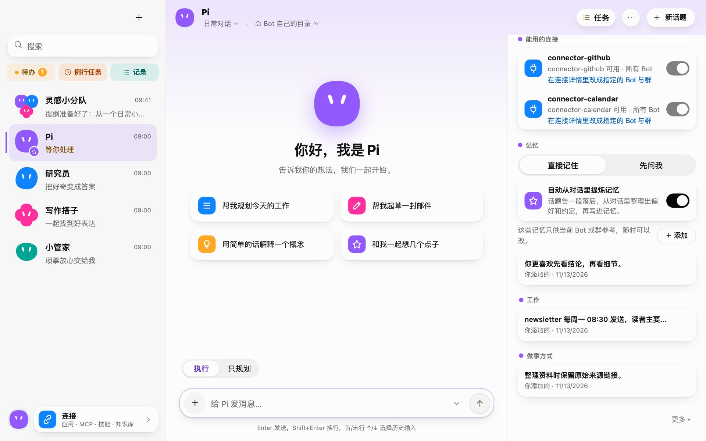
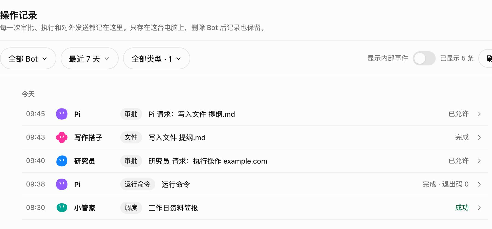

从一台电脑开始
桌面 App 可以独立使用。想在外面发任务或审批，可以配对 Android 手机。项目在另一台机器上时，再连接执行端。
桌面 App
创建 Bot、安排任务、管理权限，查看文件改动和操作记录。
Android 手机
配对后可以发起任务、查看进度、处理审批和预览结果。
执行端
把命令交给项目所在的机器执行，再查看输出和改动清单。
2 / 4让 Bot 用手机里的照片做事
- 1手机电脑 · 大脑「把昨天拍的发票整理成报销表」
- 2电脑 · 大脑电脑 · 文件与记录读记忆、话题历史
- 3电脑 · 大脑模型服务商提示词 + 历史 + 工具清单发往你选的服务商
- 4模型服务商电脑 · 大脑要调用：读手机照片
- 5电脑 · 大脑手机读昨天的照片手机上的「照片」开关要开着
- 6手机电脑 · 大脑3 张发票照片（已去定位）
- 7电脑 · 大脑模型服务商照片交给模型识别
- 8模型服务商电脑 · 大脑明细 + 要写表格
- 9电脑 · 大脑电脑 · 文件与记录写 报销.xlsx，记审计
- 10电脑 · 大脑手机推送「完成」+ 预览
1 / 4在电脑上整理本机文件
- 1电脑 · 大脑你在电脑上发消息
- 2电脑 · 大脑电脑 · 文件与记录读下载文件夹里的 PDFBot 的文件夹权限内
- 3电脑 · 大脑模型服务商提示词 + PDF 文字只发需要的文字
- 4模型服务商电脑 · 大脑摘要 + 要写文件
- 5电脑 · 大脑电脑 · 文件与记录判定后写 摘要.md改动可撤回
- 6电脑 · 大脑电脑 · 文件与记录记审计、收据、用量
- 7电脑 · 大脑手机手机同步看到结果
3 / 4在另一台电脑上跑命令
- 1手机电脑 · 大脑「修登录页报错，跑测试」话题文件夹在执行端
- 2电脑 · 大脑模型服务商提示词 + 工具清单
- 3模型服务商电脑 · 大脑要跑 npm test
- 4电脑 · 大脑手机判定后推审批卡Windows 无隔离，逐条确认
- 5手机电脑 · 大脑你点「允许」
- 6电脑 · 大脑执行端命令 + 目录 + 派发确认加密直连，中继兜底
- 7执行端在 C:\proj 执行
- 8执行端电脑 · 大脑输出、退出码、改动清单不传整个目录
- 9电脑 · 大脑电脑 · 文件与记录审计、收据、改动记录
- 10电脑 · 大脑手机推送「完成」
4 / 4电脑不在时，手机自己用模型、指挥执行端
- 1手机你在手机私聊
- 2手机模型服务商提示词 + 精选记忆用同步来的模型设置和 Key
- 3模型服务商手机要跑命令
- 4手机你在手机上确认每条命令、每次写文件；YOLO 和「记住」不生效
- 5手机执行端命令 + 电脑签发的授权授权 24 小时内有效
- 6执行端按执行端自己的策略副本检查Windows 上命令不隔离
- 7执行端手机输出、退出码
- 8手机电脑 · 大脑连上后同步回电脑对话、命令、记录
数据怎么走 · 四个场景
在手机上说一句「把昨天拍的发票整理成报销表」。只有你打开了手机上的「照片」开关，电脑才会读取照片，并先去掉定位信息；表格写在你的电脑上，手机收到通知和预览。照片会发给你选的模型提供方识别，这是数据离开你设备的地方。
在电脑上让 Bot 总结一个文件夹里的 PDF。它只在这个 Bot 的文件夹权限内读取，发给模型的是需要的文字，不是整个文件夹。写入前先经过判定，每一处改动都能撤回。
项目在另一台 Windows 电脑上，你在手机上让 Bot 跑一下测试。每条命令先在电脑上判定，再推到手机由你确认；Windows 上命令没有隔离，所以每条都要确认。执行端只返回输出、退出码和改动清单，不会把整个目录传回来。
电脑关机、断网或退出了 Pi Bot 时，手机用同步过来的模型设置直接调用模型，继续和 Bot 私聊，也能直接指挥已配对的执行端。执行端只认电脑事先签发、24 小时内有效的授权，并按自己保存的策略副本再检查；每条命令和每次写文件都要你在手机上确认，YOLO 和「记住」在这里不生效。电脑重新连上后，期间的对话、命令和记录全部同步回去。
直连优先端到端加密中继看不到内容审批和命令有审计改动可撤回内容只发给你选的模型和你允许的服务
让 Bot 分工处理任务
看看 Bot 怎样一起做计划、处理文件、制作交付物和运行例行任务。下方截图来自使用示例数据的 App。

Bot 浏览器
Bot 有自己的浏览器，替你查资料、用已保存的账号登录，照做一遍就能学会。密码和令牌只以代号交给模型，原文不经过模型。

文件与 Office
读写 Word、Excel、PowerPoint，在侧栏直接预览。每一处改动都可以查看，也可以撤回。

连接你的应用
本机日历和通讯录，Notion、Obsidian 知识库，或从这台电脑上的其他 AI 工具导入 MCP 和技能。往外写之前先问你。

例行任务
按时间，或在文件夹变化时自动开工。错过的、需要你决定的，都集中在「等你处理」。

操作电脑
看屏幕、点按钮、打开应用和文件。你一动鼠标或键盘它就暂停，全局快捷键随时叫停；密码管理、终端这类应用一直不能碰。

记忆
Bot 会记住要紧的事：关于你的、这个 Bot 的、这个群或这个项目的，各记各的。记了什么都看得见，可以改，也可以删。
权限、审批与数据去向
你可以指定 Bot 能访问哪些文件和工具，设置哪些操作需要审批，并在操作记录里查看执行结果。
数据留在你的电脑上
对话、记忆和操作记录存在你的电脑上。应用里没有遥测和统计；用云端模型时，相关内容会发给你选的服务商。
放手，也有记录
YOLO 只对当前对话生效，自动放行也写进操作记录；明确禁止的仍然禁止。改动可以撤回。

A LITTLE SETUP. A NEW TEAM.给你的电脑，
给你的电脑，
添几位新队友。
Pi Bot 已开放下载。请选择你的平台。
- 1
- 2
按你的角色组队
从内置角色和群开始，再调整分工和模型。
- 3
从一句话开始
聊想法、派任务、设例行，权限按需给。
安装前请查看对应平台的系统要求
桌面
大脑在这里：Bot、记录和密钥都在你的电脑上
macOS 首次打开说明
Pi Bot v0.0.2 的 Intel 和 Apple 芯片版均未经过 Apple 公证。首次打开时，macOS 可能提示 Apple 无法验证「Pi Bot」是否包含恶意软件。
如果你确认安装包来自 Pi Bot 官网，并决定继续，可以在尝试打开后前往「系统设置 → 隐私与安全性」，找到 Pi Bot 的提示并点「仍要打开」。
Apple 官方说明手机
发起任务、批准、看结果
执行端
另一台电脑上动手：跑命令、改项目
「已测试」= 这个版本已在该平台实际安装并跑通。
现在可以下载 Pi Bot 吗？
可以。下载与安装说明列出了当前版本和各平台安装包。
数据会上传到哪里？
Pi Bot 的大脑在你的电脑上，对话、记忆和操作记录也存在这里。会离开你设备的，是发给你所选模型服务商的请求内容，以及 Bot 打开网页、使用你连接的应用时与这些服务的往来。用 Ollama 等本地模型时，模型请求也留在本机。电脑、手机和执行端之间端到端加密，走中继时中继只转发密文。
手机和执行端怎么连？
在电脑的「设置 › 手机远控」里配对：手机扫码，执行端填一次性配对码。设备之间优先在局域网里直连，也可以允许打洞；连不通时经中继转发，内容端到端加密。手机上的照片、短信验证码等数据各有开关，由你决定开不开。执行端在 Windows 和 macOS 上是托盘应用，在 Linux 上是命令行，可加 --daemon 在后台运行。
电脑连不上时，手机还能用吗？
可以。在电脑上为某个 Bot 打开「手机直接用的模型」后，模型设置和密钥会同步到手机；电脑连不上时，手机直接调用模型和这个 Bot 私聊，也能直接指挥已配对的执行端，每条命令都要你在手机上确认。电脑重新连上后，对话和记录同步回电脑。
Pi Bot 会收集我的使用数据吗？
不会。应用里没有遥测和统计，也不会自动上报崩溃。需要反馈问题时，由你确认后再提交或导出日志，内容不包含聊天、文件和密钥。模型密钥保存在系统提供的安全存储中，不会显示在界面上。服务器只保存官网下载安装、应用检查更新和官方中继连接的每日汇总次数。汇总记录不含 IP 或个人标识。
需要我自己的模型账号吗？
需要配置你选择的模型服务：OpenAI、Anthropic、Gemini、DeepSeek 等云端服务用你自己的 API Key，或者配置 Ollama 等本地模型。模型费用、账号资格与服务条款由对应服务商决定；本站不会收集你的模型密钥。
Bot 操作电脑时，我还能控制吗？
可以。你可以配置权限、处理确认请求，查看操作记录。使用 Bot 浏览器时可接管再交还；操作电脑时你一动鼠标或键盘它就暂停，也可以用全局快捷键停止。具体能力会随平台和系统授权有所不同。
YOLO 会关闭所有安全限制吗？
不会。YOLO 会自动允许当前对话中原本需要询问的操作，但不会放行你明确禁止的权限或其他硬性限制。新话题默认关闭，不影响例行任务；关闭后恢复询问，不留下永久授权。自动允许会写入操作记录。在 Windows 上，每条命令仍然需要你确认。
支持哪些系统？
电脑端支持 macOS、Windows 和 Linux，手机 App 目前是 Android 版，执行端支持 Windows、macOS 和 Linux。部分能力因平台而异：macOS 和 Linux 上命令在沙箱里运行，Windows 上命令不做隔离、每条都要确认；操作电脑也取决于系统授权和桌面环境。